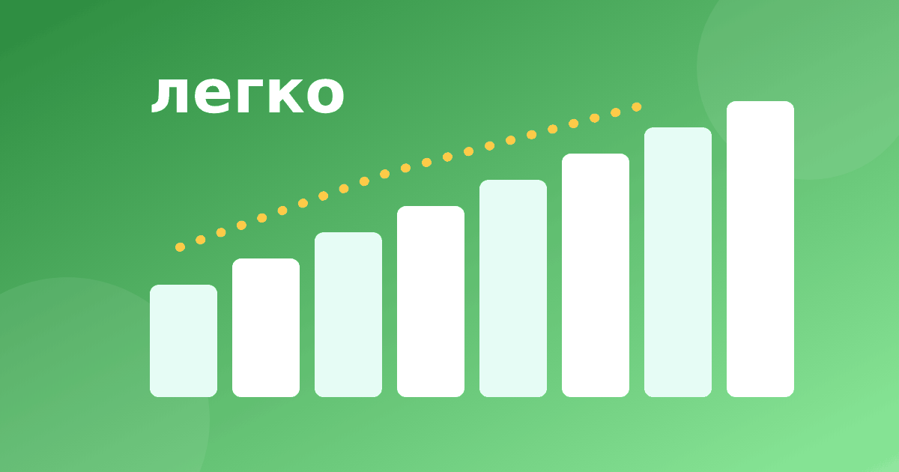

Таблица умножения легко начинается с закономерностей

Таблица из 100 клеток пугает, но на деле выучить придётся гораздо меньше, потому что многие примеры связаны между собой. Найдите опоры, и таблица умножения легко разложится по полочкам. Никто не обещает, что всё запомнится за пару дней: повторения всё равно нужны. Но с опорами они идут спокойнее. Вот способы, с которых стоит начать.
Что можно не учить отдельно
Часть таблицы ребёнок уже знает, даже не подозревая об этом.
- Умножение на 1 даёт то же число: 1 × 8 = 8.
- Умножение на 10 приписывает ноль: 7 × 10 = 70.
- Умножение на 2 — это удвоение: 2 × 9 = 18, как 9 + 9.
- Ответы на пятёрку всегда оканчиваются на 0 или на 5, например 5 × 6 = 30 и 5 × 7 = 35.
- Переставив множители, получаем то же произведение: если известно 3 × 8 = 24, то известно и 8 × 3 = 24.
После этого остаётся уже не 100, а примерно три десятка примеров, и это самые «заковыристые» шестёрки, семёрки, восьмёрки и девятки.
Правило с переставленными множителями особенно выручает с шестёрками. Если знать 6 × 2 = 12, 6 × 3 = 18, 6 × 4 = 24 и 6 × 5 = 30, то 2 × 6, 3 × 6, 4 × 6 и 5 × 6 уже тоже известны. Для самой строки шестёрок остаются только 6 × 6, 6 × 7, 6 × 8 и 6 × 9, то есть четыре примера вместо десяти. Для семёрок так же остаётся 7 × 7, 7 × 8 и 7 × 9, всего три. То есть нагрузка уменьшается сама, стоит лишь заметить симметрию.
Девятка и пальцы
Родители часто ищут, как выучить таблицу умножения быстро и легко, но слово «быстро» не должно подгонять ребёнка. Начать удобно с девятки: в ней много закономерностей. Первая: сумма цифр ответа всегда равна 9. 9 × 3 = 27, и 2 + 7 = 9. 9 × 4 = 36, и 3 + 6 = 9. 9 × 7 = 63, и 6 + 3 = 9. Вторая: число десятков на единицу меньше множителя. В примере 9 × 7 десятков шесть, 6 = 7 − 1, а единиц сразу видно: 9 − 6 = 3, получаем 63.
Есть и способ с пальцами. Положите перед собой обе ладони и пронумеруйте пальцы от 1 до 10. Чтобы найти 9 × 4, загните четвёртый палец. Слева от него остались три пальца, это 3 десятка. Справа шесть, это 6 единиц. Получилось 36. Для 9 × 8 загните восьмой палец: слева семь, справа два, итого 72. Мы подробно разобрали этот приём в статье про умножение на девять. Попробуйте вместе проверить: 9 × 6 = 54, и 5 + 4 = 9. Затем 9 × 9 = 81, где 8 + 1 = 9. Правило сработало везде, и ребёнок радуется, когда находит это сам.
Хорошая новость в том, что таблица умножения на 9 после этого уже не кажется такой большой. Но важно, чтобы пальцы были лишь подсказкой на первое время, а не единственным способом счёта.
Квадраты как якоря
Квадраты, то есть числа, умноженные на себя, запоминаются особенно хорошо, потому что в них есть образ квадратной картинки. Выучите их как отдельную короткую лесенку.
- 3 × 3 = 9
- 4 × 4 = 16
- 5 × 5 = 25
- 6 × 6 = 36
- 7 × 7 = 49
- 8 × 8 = 64
- 9 × 9 = 81
От каждого квадрата можно сделать шаг в любую сторону.
Соседние примеры
Если помнить квадрат, соседний пример получается добавлением или вычитанием одного множителя.
- 6 × 7 = 6 × 6 + 6 = 36 + 6 = 42.
- 7 × 8 = 7 × 7 + 7 = 49 + 7 = 56.
- 8 × 9 = 8 × 10 − 8 = 80 − 8 = 72.
Тот же приём работает для самых неудобных примеров из семёрок и восьмёрок. Подробнее о них в статье таблица умножения на 7 и 8. Такой счёт кажется медленным, но он тренирует понимание, а понимание потом превращается в быстрый ответ.
Мини-игра «найди закономерность»
Дайте ребёнку лист с готовой таблицей и цветные карандаши. Пусть закрасит все ответы, которые оканчиваются на 0 или 5, потом все чётные. Затем найдёт на диагонали квадраты: 1, 4, 9, 16, 25, 36, 49, 64, 81, 100. Через десять минут у него получится своя «карта таблицы». Карты удобнее запомнить, чем столбики, ведь в ней видны узоры. Заодно становится понятно, что большая таблица умножения на 9 и на другие числа состоит из повторяющихся кусочков.
Как не потерять лёгкость
Выбирайте по одной опоре в неделю, а не все сразу. Пусть ребёнок сам придумает, какая закономерность ему нравится больше. И не торопитесь убирать подсказки: когда они станут не нужны, ребёнок перестанет к ним обращаться. Если нужен общий план занятий, загляните в статью как быстро выучить таблицу умножения. Спокойный темп и мелкие победы делают так, что таблица умножения легко становится привычной. А если захочется свериться, как выучить таблицу умножения быстро и легко, не нарушая спокойствия, вспомните главное: опора важнее скорости, а скорость придёт с повторением. Хвалите ребёнка за найденную закономерность, а не только за верный ответ.